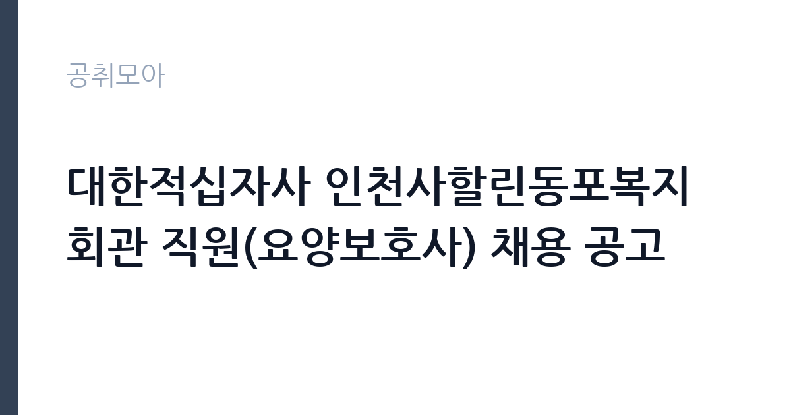

[공공기관] 대한적십자사 인천사할린동포복지회관 직원(요양보호사) 채용 공고
대한적십자사 · 인천 · 마감 2026-11-17 (D-16) · 출처 잡알리오

한눈에 보는 모집 조건
| 기관 | 대한적십자사 |
|---|---|
| 공고명 | 대한적십자사 인천사할린동포복지회관 직원(요양보호사) 채용 공고 |
| 고용형태 | 정규직 |
| 근무지 | 인천 |
| 게시일 | 2026-11-02 |
| 마감일 | 2026-11-17 (D-16) |
지원자격, 이렇게 읽으세요
- 공공기관 채용공시
- 세부 조건은 원문 공고문 확인
필수요건은 요양보호사 자격증 소지자이고, 공고게시일 이전 취득분만 인정됩니다. 공통요건에서 이 공고만의 차이가 드러납니다. 임용예정일이 2026년 12월 1일이 아니라 2027년 1월 1일이라는 점입니다. 따라서 2027년 1월 1일부터 근무가 가능한 사람이 응시자격을 갖춥니다. 학력·성별·연령·군필여부는 제한이 없지만 임용일 기준 만 60세 미만이어야 하고, 회관 직원운영내규 제14조의 임용결격사유에 해당하지 않아야 합니다. 결격사유에는 노인복지법과 장애인복지법에 따른 취업제한 조항이 포함됩니다.
이 공고의 포인트
이 공고의 첫 번째 포인트는 임용 시점입니다. 같은 회관의 다른 공고가 12월 1일 임용인 데 비해 이 공고는 한 달 뒤인 2027년 1월 1일입니다. 현 직장을 정리할 시간이 필요한 지원자에게는 이 한 달이 실질적인 차이를 만듭니다. 두 번째는 무기계약직입니다. 만 60세 미만이면 정년까지 근무할 수 있어, 요양보호사 직종에서 안정적인 선택지가 됩니다. 세 번째는 우대 항목입니다. 경력 1개월 이상, RCY 경력, 사회봉사활동 확인서, 광역자치단체장 이상 표창이 모두 서류전형 가점으로 인정됩니다.
전형은 어떻게 진행되나
1차 서류심사는 100점 만점으로 평가하고, 채용분야별 인원의 7배수 범위 안에서 합격자를 정합니다. 만점의 60퍼센트 미만은 과락이고, 동점자는 모두 합격 처리합니다. 2차 면접심사는 25점 만점에 평점 15점 미만이면 채용 불가입니다. 서류전형은 11월 18일 수요일 오후 2시에 시행하고 같은 날 오후 6시 이전에 합격자를 발표합니다. 면접은 11월 20일 금요일 오후 3시, 최종합격자는 11월 23일 월요일 오후 5시에 발표합니다. 두 공고의 전형 일정이 동일하므로, 중복 지원은 불가능하고 하나를 선택해야 합니다.
원문에서 확인한 전형 방식
<필수> - 요양보호사 자격증 소지자 ※ 공고게시일 이전 취득에 한하여 인정 <공통> -임용(예정)일(2027. 1. 1.)로부터 근무 가능한 자 -학력, 성별, 연령, 군필여부 : 제한없음 -단, 공고일 기준 정년에 해당하지 않는 자(임용일 기준 만 60세 미만인 자) -인천사할린동포복지회관 직원운영내규 제14조 임용결격사유에 해당하지 않는 자
이런 분께 추천해요
- 2027년 1월부터 근무를 시작할 수 있는 분. 임용예정일이 응시자격에 명시되어 있습니다.
- 현 직장을 정리하고 새 직장으로 옮기려는 요양보호사. 12월 1일 임용분보다 준비 기간이 한 달 더 있습니다.
- RCY 활동이나 사회봉사활동 이력이 있는 분. 확인서를 제출하면 서류전형 우대 항목으로 인정됩니다.
지원 전 체크리스트
- 2027년 1월 1일부터 근무가 가능한가. 12월 1일 임용 공고와 혼동하지 않았는지 확인하십시오.
- 요양보호사 자격증을 공고일 이전에 취득했는가. 공고일 이후 취득분은 인정되지 않습니다.
- 임용일 기준 만 60세 미만인가. 정년 요건입니다.
- 두 공고 가운데 어디에 지원할지 정했는가. 전형 일정이 같아 중복 지원은 의미가 없습니다.
모집 일정과 제출 타이밍
접수는 2026년 11월 2일 월요일부터 11월 17일 화요일 오후 5시까지입니다. 이메일, 우편, 대한적십자사 온라인 접수 가운데 하나를 이용합니다. 우편은 마감일 도착분만 유효합니다. 서류전형은 11월 18일 수요일 오후 2시, 면접은 11월 20일 금요일 오후 3시에 진행되고 최종합격자는 11월 23일 월요일 오후 5시에 발표됩니다. 최종합격 후 임용일은 2027년 1월 1일이므로, 합격 발표와 실제 근무 시작 사이에 약 5주가 비게 됩니다.
직무 이해하기: 공공기관
인천사할린동포복지회관의 요양보호사는 사할린에서 귀환한 동포 어르신의 일상생활을 지원합니다. 신체활동 지원으로 식사와 배설, 목욕, 이동 보조가 있고, 정서 지원으로 말벗과 여가 활동 안내가 있습니다. 여기에 건강 상태를 관찰해 기록하고 이상이 있으면 간호 인력에게 전달하는 업무가 더해집니다. 시설 입소 어르신을 대상으로 하므로 같은 이용자를 계속 돌보며 상태 변화를 파악하는 것이 중요합니다. 일본어나 러시아어를 사용하는 어르신이 있어 의사소통 방식에 배려가 필요합니다.
자기소개서 작성 팁
이 공고는 서류심사 100점과 면접 25점으로 당락이 갈리고, 서류에서 자격증·경력·봉사활동이 우대 항목으로 점수화됩니다. 자기소개서는 우대 항목을 확인시켜 주는 근거로 쓰십시오. 첫 문단에서는 요양보호사 자격 취득 시점과 실무 경력을 기간 중심으로 밝히십시오. 두 번째 문단에서는 2027년 1월 1일부터 근무가 가능하다는 점을 분명히 적으십시오. 다른 공고와 임용 시점이 다르므로 이 한 줄이 배치 판단의 근거가 됩니다. 세 번째로는 돌봄 과정에서 기록과 인수인계를 어떻게 했는지 구체적으로 쓰십시오. 시설 근무는 교대조 간 인수인계가 안전과 직결됩니다.
면접 준비 포인트
면접은 25점 만점으로 짧게 진행되고 15점 미만은 채용 불가입니다. 질문은 실무 경험과 근무 조건 두 축으로 나뉩니다. 실무에서는 식사 보조나 이동 보조 시 주의점, 인지 기능이 저하된 이용자 대응을 묻습니다. 근무 조건에서는 2027년 1월 1일부터 근무가 가능한지, 교대 근무가 가능한지를 확인합니다. 답변은 결론을 먼저 말하고 근거를 한두 문장 붙이는 방식이 짧은 면접에 효과적입니다. 마지막에 근무 시작 가능일을 다시 한 번 분명히 말하십시오.
급여·근무조건 읽는 법
공고문에는 임금이 구체적 금액으로 명시되어 있지 않아 원문 공고문과 회관 인사담당 확인이 필요합니다. 참고로 알리오 2025년 결산 공시 기준 대한적십자사의 일반정규직 1인당 평균보수액은 6,937만원, 신입사원 초임은 3,869만원, 무기계약직 1인당 평균보수액은 4,017만원입니다. 이번 공고는 무기계약직이므로 무기계약직 평균보수액이 더 가까운 값입니다. 평균보수액은 기본급에 고정수당, 성과상여금, 급여성 복리후생비를 합산한 수치이고, 무기계약직은 별도 임금 기준이 적용됩니다. 급여 등급과 수당, 명절휴가비 지급 기준은 원문에서 확인하십시오.
자주 묻는 질문
- 12월 1일 임용 공고와 무엇이 다른가요?
임용예정일이 다릅니다. 이 공고는 2027년 1월 1일 임용이고, 같은 회관의 다른 공고는 2026년 12월 1일 임용입니다. 전형 일정은 같으므로 하나만 선택해 지원해야 합니다. - 요양보호사 경력이 없어도 지원할 수 있나요?
자격증은 필수지만 경력은 필수가 아닙니다. 다만 해당업무경력 1개월 이상이 서류전형 우대 항목으로 들어가 있어, 경력이 있으면 점수에서 유리합니다. - 정년은 어떻게 되나요?
임용일 기준 만 60세 미만이어야 합니다. 무기계약직으로 채용되며 정년까지 근무할 수 있는 고용형태입니다.
함께 보면 좋은 공고
[공공기관] 건설분야 기간제 근로자 채용공고 [HVDC건설본부] — 마감 2026-11-16[공공기관] 대한적십자사 인천사할린동포복지회관 직원(요양보호사) 채용 공고 — 마감 2026-11-17[공공기관] [부산보훈병원] 업무지원직(급식) 보훈특별고용 — 마감 2026-11-12출처: 잡알리오 공개정보를 바탕으로 공취모아가 정리한 안내글입니다. 모집 조건·일정은 변경될 수 있으니 지원 전 반드시 원문 공고문을 확인하세요. 본 글은 정보 제공용이며 합격을 보장하지 않습니다.